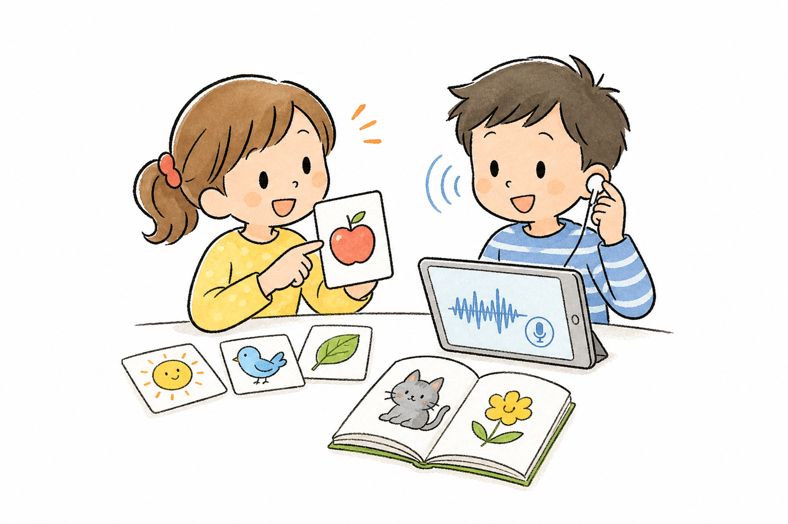
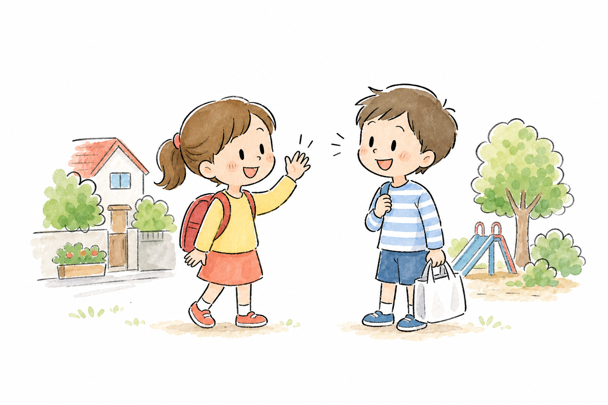
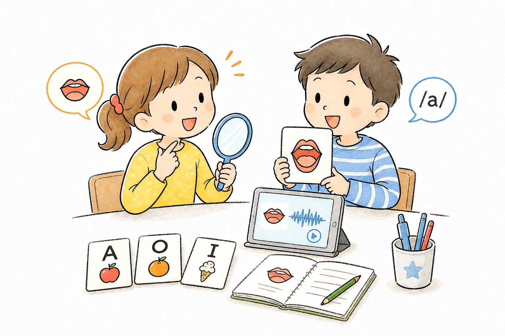
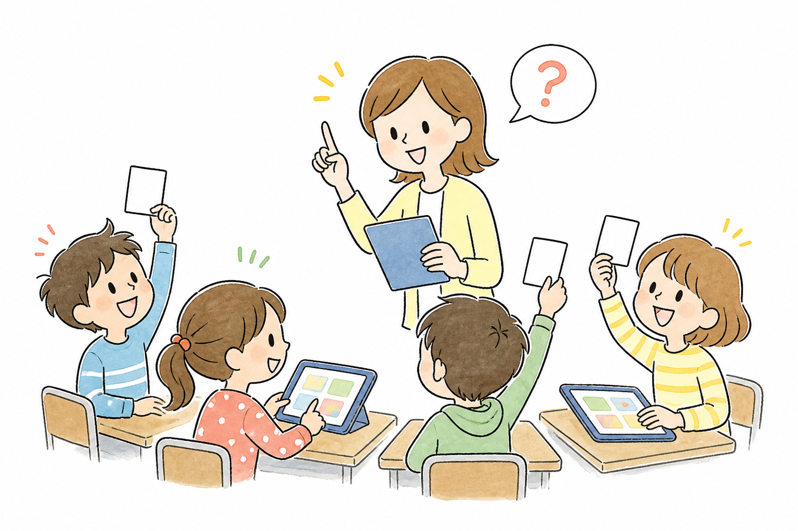
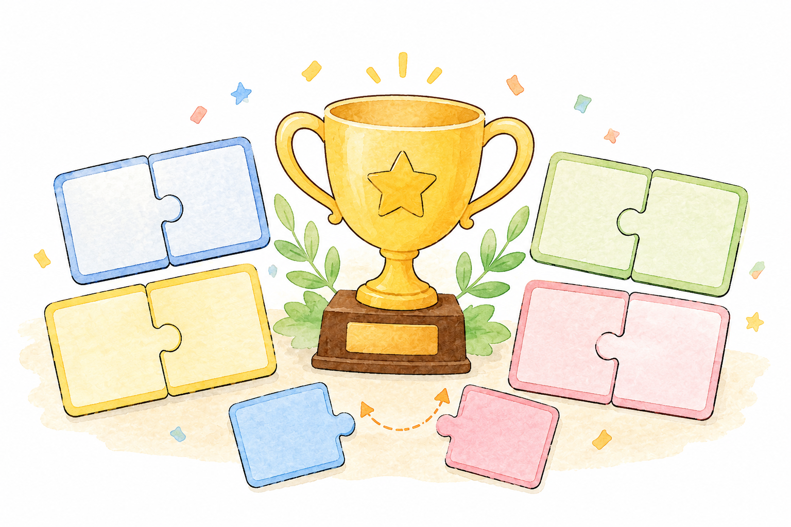

詞彙卡
搭配圖片、客語音檔和常見詞彙，幫助孩子先聽懂、看懂。
##依程度選內容，照生活練開口
依照孩子的程度選擇內容，從基礎句子、課堂練習到生活情境，讓客語在聽得到、說得出、用得上的任務裡慢慢長出來。
1
彈性入門
先從常用詞、生活短句和發音練習開始，讓孩子用適合自己的速度累積客語能力。

搭配圖片、客語音檔和常見詞彙，幫助孩子先聽懂、看懂。

從問候、吃飯、上課與活動句開始，把短句變成日常能用的話。

搭配腔調、音檔播放和跟讀練習，讓孩子慢慢掌握客語發音。
2
課堂延伸
依照課程單元安排題組，讓學生在課堂中完成聽、說、讀的練習。

聽見關鍵詞，選出最合適的答案或圖片。

將詞彙與圖片正確配對，培養反應與詞彙力。
3
生活任務
走入孩子最熟悉的日常情境，從簡單會話到完整任務，讓客語自然融入生活。